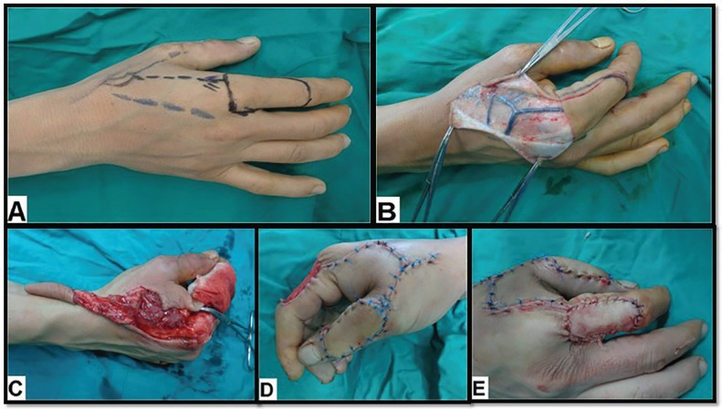
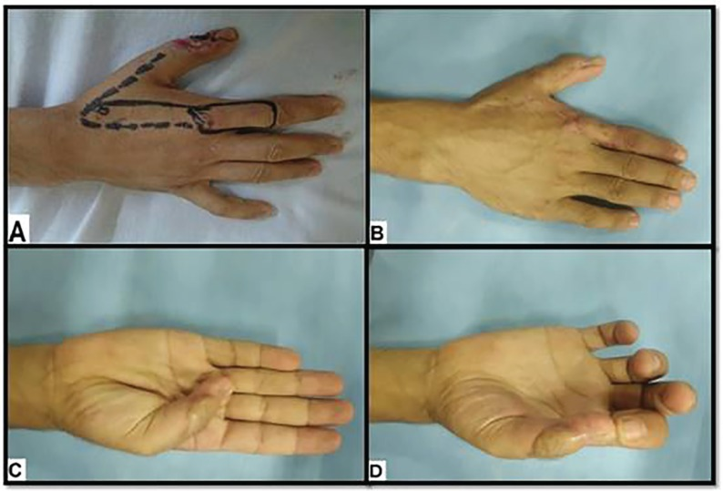
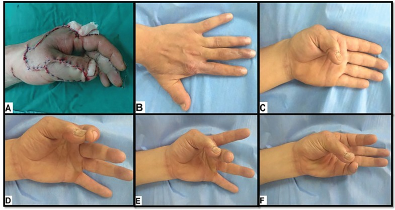

母指（親指）は物をつまむ・握るといった手の働きの中心であり、指先の感覚（触った感じが分かる知覚）がとても重要な部位です。この論文は、示指（人差し指）の甲側の皮膚を、栄養する血管と知覚神経の茎をつけたまま母指へ移して再建する新しい方法を提示し、母指の再建に大きな道すじをつけた報告として知られます。
背景 ― 母指の再建で何が課題だったか
母指は手の機能のかなめで、けがや切断で失うと、つまむ・握るといった動作が大きく損なわれます。単に皮膚でふさぐだけでなく、指腹（指先の腹側）や掌側（手のひら側）には触覚が必要で、感覚のない皮膚でおおうと物をうまく扱えません。
そのため母指再建では、丈夫で、なおかつ知覚（触った感じが分かること）をもった皮膚をどう持ってくるかが課題とされてきました。
この論文がしたこと
Foucher と Braun は、示指（人差し指）の甲（背側）の皮膚を島状皮弁（周囲から切り離し、血管や神経の茎だけでつながった皮弁）として母指へ移す新しい術式を報告しました。
この術式で母指損傷の再建を行い、12連続例で皮弁の壊死（えし：血流が絶えて組織が死ぬこと）がゼロだったと報告し、感覚のある皮膚で母指をおおえる有用な手段として提案しました。
解剖と手技の要点
皮弁の栄養血管は第1背側中手動脈（first dorsal metacarpal artery, FDMA＝親指と人差し指の間の甲を走る細い動脈）です。この動脈を軸に、示指の甲の皮膚を切り取ります。
茎（つけ根）には動脈だけでなく、1〜2本の伴走静脈（動脈に寄り添い血液を戻す静脈）と、橈骨神経浅枝の終枝（親指側の甲の感覚をになう知覚神経）を含めます。神経を一緒に運ぶことで、移した皮膚に感覚が残る「知覚皮弁」になるとされます。
血管と神経の茎を残したまま皮弁を母指まで回して縫いつけます。血管・神経の茎と皮弁の形が凧（カイト）に似ることから「カイト皮弁（kite flap）」、また術者の名から「Foucher 皮弁」とも呼ばれます。

結果
示指背の島状皮弁による母指再建を行い、12連続例で皮弁の壊死がみられなかったと報告されています。
母指の指腹・掌側など知覚が重要な部位を、感覚をもった皮膚でおおえる点が利点とされ、母指再建の選択肢として位置づけられました。


意義 ― なぜ里程標(マイルストーン)なのか
本術式は、感覚のある皮膚で母指をおおうという課題に実用的な答えを示し、その後の母指再建の定番術式のひとつとなりました。
さらに、この第1背側中手動脈皮弁は、のちの逆行性背側中手動脈皮弁（Maruyama 1990）や、穿通枝（皮膚へ抜ける細い枝）を利用する DMAP 皮弁（Quaba & Davison 1990）へと発展していきます。背側中手動脈皮弁ファミリー（同じ血管系を使う一連の皮弁群）の出発点となった原著として重要とされます。
この論文の要点
- 示指（人差し指）の甲の皮膚を、血管と知覚神経の茎ごと母指へ移す島状皮弁の原著。
- 栄養血管は第1背側中手動脈（FDMA）で、1〜2本の伴走静脈と橈骨神経浅枝の終枝を含むため感覚のある皮弁になる。
- 12連続例で皮弁の壊死がゼロだったと報告されている（初期成績）。
- 血管・神経の茎と皮弁の形が凧に似ることから「カイト皮弁」、術者名から「Foucher皮弁」とも呼ばれる。
- 背側中手動脈皮弁ファミリー（逆行性皮弁やDMAP皮弁）の出発点となった里程標的な術式。
用語ミニ辞典
- 島状皮弁
- 周囲の皮膚から切り離し、栄養する血管や神経の茎だけでつながった状態で移す皮膚のかたまり。
- 第1背側中手動脈（FDMA）
- 親指と人差し指の間の手の甲を走る細い動脈。この皮弁の栄養血管。
- 知覚皮弁
- 感覚をになう神経を一緒に運ぶことで、移したあとも触った感じが分かる皮弁。
- 橈骨神経浅枝
- 手の甲の親指側の感覚をになう神経。その終枝を皮弁に含めて知覚を保つ。
- 指腹
- 指先の腹側（物をつまむときに触れる面）。触覚が重要な部位。
- 穿通枝
- 深い血管から筋肉などを貫いて皮膚へ抜ける細い枝。のちのDMAP皮弁が利用する。
- カイト皮弁
- 本術式の通称。血管・神経の茎と皮弁の形が凧（カイト）に似ることに由来する。
本ページは形成外科の学習・参照を目的とした編集部によるオリジナルの日本語解説で、原著（英語）の逐語訳・全文転載ではありません。正確な内容・数値・図は必ず上記リンク先の原著をご確認ください。
掲載している図は、原著の図ではありません。原著の図は出版社が著作権を持ち転載できないため、同じ術式・同じ解剖を扱った無料公開（オープンアクセス／CC BY）論文の図を、出典とライセンスを明記して引用しています。